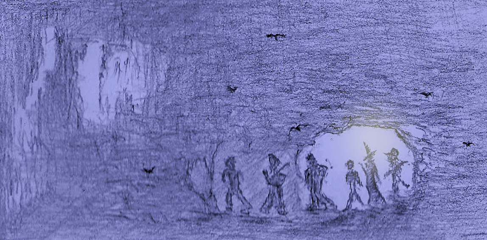
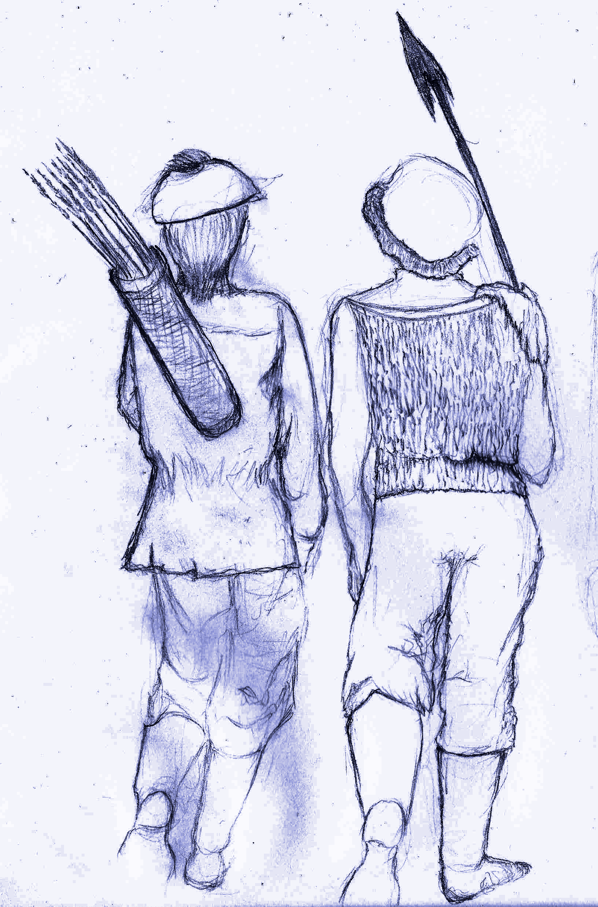
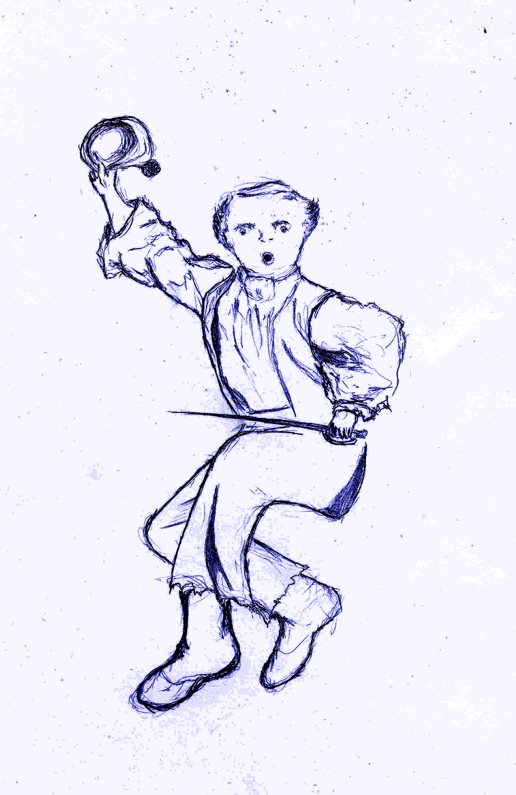
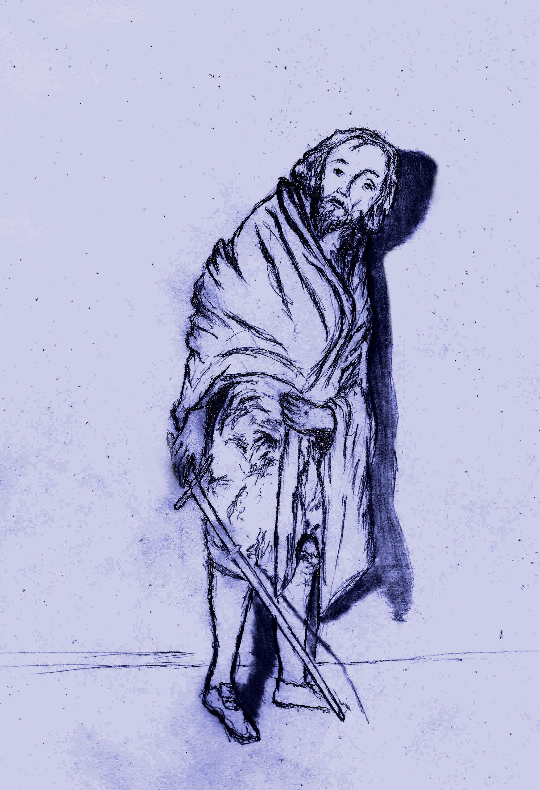
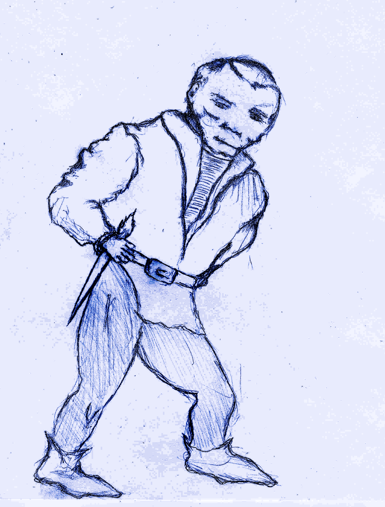
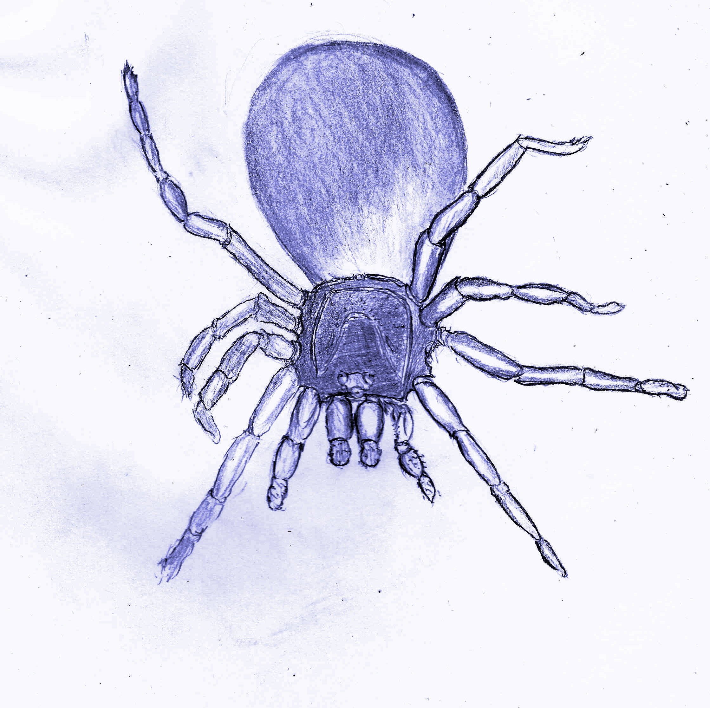
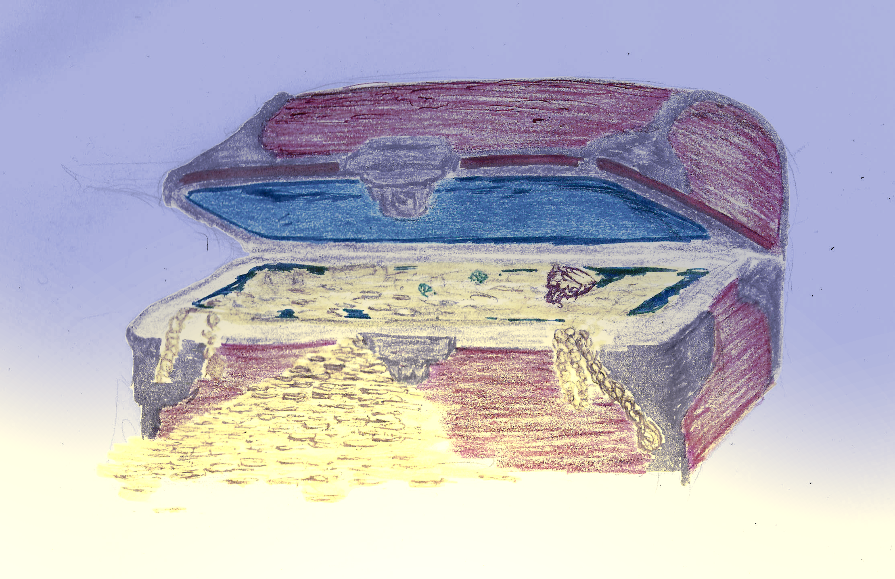

Welcome to the DepthRangers guild, where we handle all sorts of underground exploration requests. From a lost pet, to making contact with an unknown plane of existence. This job is its own reward, though the riches found along the way provide an extra motivation.
This short book describes the DepthRangers system. This is a rules-light combat heavy system that focuses on fast paced gameplay. On this book you'll find the necessary resources to create your character, and some of the dangers you'll find along the way. You may excuse the succinctness of this manuscript but our staff seem to have most of their attention on the hunt of a much lauded treasure, the details of which they've kept to themselves...
TABLE OF CONTENTS
DepthRangers is a Rules-Light Open Source TableTop RPG System designed for fast paced action focused gameplay. However, its rules allow for a wide variety of adventure experiences and it has enough character creation depth for some light roleplaying. The game uses d6 exclusively, so besides your character sheet all you need is a set of dice or virtual dice.
While we are working hard to ensure that the game is as polished as possible, this must be considered a Work In Progress.
To play this game, you must create a series of characters using the mechanics described in Character Creation, read up on the Game Mechanics then ask your GM to manage the Monsters and assign the Treasures found at the end of the book.
This section provides an explanation on how to create your own characters. Following the wisdom of the late great sage Mr. Gigax, you will select your party by reviewing the many specialties of explorers and the particulars of the species who've decided to participate in this profession (in other words the Races & Classes).
As you can imagine, all of them provide a lot of value and have many chances to shine. The key is to balance your party so that they as a whole benefit from their combined strengths.

These generic stats are what you use when creating different characters, some races & classes will require adjusting these values.
How resilient to damage your character is. The base HP for characters is (2d6+3) HP on their first level plus an additional 1d6 HP each level.
Equipping armor is vital to surviving your adventures. You subtract the damage you receive by the total amount of armor class or "AC" you have. Your maximum armor is determined by the armor you can equip yourself with. Though there are some restrictions on who can use certain gear (see races & classes).

A save is thrown when an extraordinary feat must be accomplished (such as avoiding a deadly trap).
All characters have 3 types of saves:
The baseline for all saves is 4.
When asked to roll for a save a d6 is thrown, if the value is equal to or greater than the character's save the save is successful otherwise it fails.
While saves generally require a roll of 4 or greater, some races have bonuses and penalties that will change this amount. So be sure to account for these bonuses and penalties in your character sheet.
The currency of this game is gold, and "g" is the unit. Your character starts out with 1d6*20g and will gain more gold from completing quests and selling items. You'll use this to purchase items, use services and even bribe receptive monsters into giving you information.
Your cargo capacity. Each character has 10 available inventory slots, so long as they don't fatigue.
You start out with 5 torches and rations.
There are 4 races of adventurers available:
Each has its own strengths and weaknesses and all have something valuable to contribute.

Humans are set apart by their sheer willpower.
They have no bonuses or penalties.
They can be any class.
They are limited only by their class.
Human determination and sheer force of will can have a direct impact on the outcome of an adventure. It can help overcome what seem to be insurmountable odds. Human will manifests itself in the form of "re-roll" dice.
"re-roll" dice allow changing the roll of any dice, at any moment in the game, for any reason. However its influence is limited:
For example if a save requires two dice, you can expend 1 re-roll dice to attempt to change either one of those two dice, but you must leave the other intact. In order to change both dice, you must expend 2 re-roll dice.
Humans start with a single re-roll dice, but gain an additional dice every two levels.
Once a re-roll dice dice has been expended, you can recover them in two ways:
Humans can expend one of their re-roll dice to cure any status ailment.
When a human character's HP goes down to 0, and they have remaining re-roll dice, they can expend one re-roll dice and recover 1d6 HP to keep going. They can choose to expend additional re-roll dice and recover additional d6 HP during this process of recovery.
When a human makes a save roll of 6, they have a +1 to saves of that nature until the encounter or event is over.
When a human lands a critical attack, for the rest of round other characters add a +1 to (character_level) die they roll.
Dexterous and magically inclined but not as resilient as humans.
Elves have a fragile body, hence they start with +2HP instead of +3HP and gain a +1 penalty to their body saves (meaning you must roll 5 or higher to succeed on a body save). However they have unusual dexterity and magical attunement, and gain a -1 boon on dex saves and also another -1 boon on magic saves (meaning rolling a 3 or higher is a successful dex or magic save).
They can be any class.
They are limited only by their class.
This magical affinity also makes them immune to magical compulsion and mental manipulation (such as being hypnotized).
Elven keen senses give them an edge when detecting secrets, gaining a +1 to searching (particularly useful when detecting secret doors).
Elven keen senses give them an edge when wielding a ranged weapon gaining an accuracy on par with two handed weapon wielders.
Dwarfs are hardier than their peers, but not as dexterous.
Their resilient body grants them a -2 boon to body saves (meaning they rolling a 2 or greater is a successful body save), but their stubby limbs impose on them a +1 penalty to dex (meaning you must roll 5 or higher to succeed on a dex save).
They can be any class.
They are limited only by their class.
They are almost entirely immune to poison, there are rumors of certain beings able to poison dwarfs but those rumors are generally dismissed.
Dwarfs have +1 HP each level.
Dwarfs don't need to use torches to see (technically a purely dwarven party would not need torches). This can have some advantages in certain unconventional situations.
Brownies are shorter than dwarfs and about as slender as elves.
Brownies are more fragile than the other races, they take +1 penalty on body saves (meaning you must roll 5 or higher to succeed on a body save), but get a -1 boon on dex saves (meaning rolling a 3 or higher is a successful dex save).
Brownies can't be healers, however they can be any other class.
Brownies can't use two handed weapons, but they can use single handed weapons or ranged weapons for attack.
For armor, Fighters can use Chainmail, while other classes can only use a Brigandine; but no standard shields or helmets.
Brownies are very nimble with their fingers and have a knack for locks, gaining a +1 on lock-picking throws.
Additionally they’re able to engage in conversation with animals. If you have a brownie on your party, whenever you meet an animal, it may react in a non-hostile manner. Note that any animal that is "Persuadable" will accept rations as a bribe instead of money (though some might ask for both).
Their bodies are somewhat fragile starting with +1 HP instead of +3HP, and deduct a -1 HP from each level up.
Given their smaller stature they are very hard to actually hit by an opponent, starting with a +1 AC and gaining an additional +1 AC per level.
Using a bow grants them an additional 1 AC on top of ranged weapon bonuses.
These are the areas each character specializes in.
Fierce and resilient damage dealing combatants.
Fighters are able to equip any weapons and armors they find.
When engaged in melee combat, Fighters can ignore one d6 roll of 1 for calculating accuracy, see attack accuracy.
When landing a successful hit, they re-roll any damage die on 1s.
Upon defeating an enemy they can strike another target that same round (two attacks on that turn).
Fighters gain an additional +3 HP on level 1, and an additional +1 HP every odd level (3, 5, etc).
When engaged in melee combat, and landing a critical attack. If the target is a "regular sized" & "non-undead" humanoid, Fighters will overwhelm their opponent knocking them violently to the ground. The target remains stunned and inactive for one round.
Mages are versatile casters capable of offensive and defensive magic. They start with two spell slots and gain an additional spell per level. As mages level up, not only do they gain more spell slots, some of the spells in their possession also become more powerful. When casting, the slot used does not matter, what matters is the Mage’s level.
While extremely versatile and powerful, Mages require preparing ahead of time. They must first assign a known spell to a slot before it can be cast. Upon resting, Mages recover all their spells and can reassign known spells to their slots.
Mages are unable to use 2 handed weapons, and they can only equip Bringadines as armor.
Mages can use any scroll to cast a spell. However using a scroll consumes it.
Similarly, a Mage is able to use a wand if found.
Mages can learn new spells from scrolls found in their adventures (unfortunately, the ones sold in the market are only good enough for casting not studying). They learn new spells when they bring a scroll of an unknown spell to the surface.
Due to their mastery of magic, mages can re-roll magic save die that land on one.
Healers are casters focused on defensive magic. Healers start with two spell slots and gain an additional spell per level. As they level up, not only do they gain more spell slots, some spells also become more powerful (what matters is the Healer’s level not the specific slot used). Upon resting, Healers recover all their spell slots.
Healers are able to use any armor they find, however they can't use 2 handed weapons.
Healers know all Healer spells from the start and can cast them from any slot at any given time.
Healers can use mage scrolls, however they can only use scrolls that target other party members.
Healers heal (1+character_level) HP each time they use a bandage, and gain a +(character_level)/2 bonus when using an antidote to neutralize poison.
Additionally,from level 2 onwards healers heal an additional +(character_level/2)d6 HP when using a Healing Potion.
Healers are immune to sickness and can't be afflicted by a diseased status.
Healers can combine the positive attributes of two bottles into a single bottle, though they must roll a successful magic save each time.
Healers are the only ones who can freely use curative items on others in the middle of battle.

Rogues are equally dexterous and deadly. They bring an equally valuable set of skills to weapon combat and to exploration.
Rogues are able to use anything they find except for plate armor.
Rogues get a +1 to rolls when searching, dealing with traps and picking locks.
Rogues deliver devastating sneak attacks to susceptible enemies (enemies such as undead may be immune, receiving a normal attack instead). To inflict them they must first hide, by spending a turn inactive and succeeding a dex save, then they produce a (6*character_level)d6 damage. Basically they gain full damage die plus an additional 1d6 roll of damage.
When equipped with a ranged weapon, Rogues get a +1 to their dex save when rolling for sneak attacking.
Starting at level 2, Rogues are able to use scrolls or wands with a proficiency of 1/2 their character_level. Though to use one, they must cast a successful magic save.
Revive scrolls require 2 consecutive successful magic saves to succeed.
The world of the DepthRangers is one fraught with peril, and opportunity. Some of the most important things to keep in mind are detailed below...

This is a list of all the items you can find across the market's many shops. This should be more than enough for an eager explorer, though there are many things not found here which you may find beneath the surface.
Every trader you find, regardless of their specialty or location, will purify expired goods for 1g (per piece) as a service to explorers.
Though most of what you buy is already second hand, it doesn't mean you are not affected by depreciation. When you sell items, you only get half the item's price. You can always sell gear at the surface, but there are actually a good deal of places to sell gear in your travels.
When making your purchases, keep in mind that once outside the safety of your guild, there is less time to go rummaging through your backpacks. So each party member should be somewhat self sufficient. On one hand, adventurers can exchange items only outside of combat. And even then, since you're on the go, you can only exchange one item at a time. That means that if you wish to give your party mate 3 bottles of healing, you will give them one at a time as you keep on exploring so that you both hand over each and store them.
These concepts will be used for many aspects of the game such as monster damage. We suggest that you always ignore fractions in any calculations you do.

Level you're currently at in a dungeon or quest (starts at 0), found in calculations as: dungeon_level. Again if you're not in a dungeon, then your quest itself determines what this value is.
The level of a monster (starts at 0), found in calculations as: monster_level
This value should be the same as the dungeon_level, but it's decoupled to allow GMs a bit more control.
Level your playable character currently has (starts at 1), found in calculations as: character_level
Amount of playable characters that make up your party. These monster encounters were designed with 4 in mind, so you might need to make adjustments if you deviate a lot from this amount. Found in calculations as: party_size
A DepthRanger's life is not a cozy one - Life or death situations are commonplace in the depths. This section are the bits of knowledge that provide a lifeline to these brave explorers.
First, players must take the initiative. That is, when players enter combat, they generally get the upper-hand and strike first (any exception would be a particularly crafty opponent).
Second, players are warned to carry ranged weapons as well (the best weapon type is having both melee and ranged)!!!
With that out of the way, the next sections will get into detail on the particulars of aiming, tactics, etc.
Single and Two-Handed weapons are used by front line combatants. They have the advantage of not requiring munitions, plus certain classes have boons specifically for this type of combat.
A ranged weapon generates the same level of damage as a melee weapon. Since using a ranged weapon allows the user to attack at a distance, that user is granted +(character_level+1) AC. When a player is using a ranged weapon, they use both hands so technically ranged weapons are a special class of two handed weapon though they only take up one slot when stored. Meaning a character wielding a ranged weapon can't hold a torch.
Unfortunately, each use consumes an arrow and you can only have 10 arrows per slot (unless you find a quiver). In addition, you may need a backup melee weapon to switch to if you run out of ammunition. Also, in order to use your ranged weapon you need to equip the ranged weapon ahead of time. Changing weapons mid battle requires spending a turn performing this task.
Finally, you can't use ranged weapons to detain someone who's trying to escape (you use your hands or the flat of the blade).
When a character lacks a weapon, they have single handed weapon accuracy and inflict character_level damage.
Attack outcome is determined when damage dice are rolled, in other words there's no need for an additional roll to determine outcome.
Depending on what numbers were rolled, one of three things will happen:
Your character performs a devastating attack. Critical attacks perform serious damage, and in addition certain classes and monster types unleash a specific tactical maneuver.
| Character Level | Number Of Fives/Sixes Rolled |
|---|---|
| If the character rolls a 6, it performs a critical attack. | |
| If the character rolls a single 6, it performs a critical attack. | |
| If the character rolls a combination of one 5 or 6, and one 6 it performs a critical attack. | |
| If the character rolls a combination of one 5 or 6, and one 6 it performs a critical attack. | |
| If the character rolls a combination of two 5 or 6, and one 6 it performs a critical attack. | |
| If the character rolls a combination of two 5 or 6, and one 6 it performs a critical attack. |
Normal attacks simply tally the damage dice and add any bonuses (or minuses) to the total damage output.
During combat, weapon accuracy is determined with the same dice throw used for damage.
When you roll (character_level)/2+1 one's, that character misses. That is, it takes rolling a 1 on the first level then an additional 1 every even level up. This is laid out on the table below:
Single Handed Weapon Accuracy Table
| Character Level | Number Of Ones Rolled That Cause The Character To Miss An Attack |
|---|---|
| 1 - if the character rolls a single one, the attack misses. | |
| 1 - if the character rolls a single one, the attack misses. | |
| 2 - if the character rolls two ones, the attack misses. | |
| 2 - if the character rolls two ones, the attack misses. | |
| 3 - if the character rolls three ones, the attack misses. | |
| 3 - if the character rolls three ones, the attack misses. |
A two handed sword allows you to ignore one of these rolls, when you roll (character_level)/2+2 one's, that character misses. Similar to the above, just a bit more accuracy:
Two Handed Weapon Accuracy Table
| Character Level | Number Of Ones Rolled That Cause The Character To Miss An Attack |
|---|---|
| n/a - the attack always succeeds. | |
| 2 - if the character rolls a two ones, the attack misses. | |
| 3 - if the character rolls three ones, it misses. | |
| 3 - if the character rolls three ones, it misses. | |
| 4 - if the character rolls four ones, it misses. | |
| 4 - if the character rolls four ones, it misses. |
What are you a humanoid or a rat person? No retreating, you succeed or die trying!
We actively discourage retreat, however if you wish to include this, then all characters in the party must roll a successful dex save to run away. Upon failure, you spend a turn inactive.
Hazard dice depict the dangerous nature of your profession, thrown after 4 non combat events.
Non Combat Events represent a sizable lapse of time spent out combat during your adventures. Non Combat events are:
Whenever a trap is sprung, a combat initiated or a hazard die is thrown, the non combat event count goes back to 0.
The point is that spending idle time is a luxury and comes at a cost. Besides, the existence of hazard die is a reminder of why you can't just rest anywhere.
Hazard Die Rolls depict events that take you by surprise when things seemed otherwise peaceful during your adventures. The players get to roll hazard die, however the resulting outcome is up to the GM to determine.
Searching: Players can search for hidden mysteries such as secret doors by rolling a d6 that must be greater than:
Elves and Rogues get a (cumulative) +1 to their roll when searching for secrets.
To detect a Secret Door you must perform a successful search.
The process of searching is slow and counts as a non-combat event (for the purposes of hazard dice rolls).
To pick a lock a player must throw a 1d6 and roll greater than 4. Rogues gain a +1, and Brownies also gain a +1 to lock-picking throws - these two bonuses are cumulative.
The process of picking a lock takes time and counts as a non-combat event (for the purposes of hazard dice rolls).
Also Picking a lock consumes a lock-pickers kit.
Unless told otherwise, traps can usually be deactivated by all characters. However, in order to deactivate a trap, they must expend one set of thieves tools currently in their possession.
To successfully disable a trap, you must throw a 1d6 and roll greater than 4. If you succeed you deactivated the trap otherwise the trap is sprung.
An attempt at trap deactivation will consume a set of thieves tools regardless of outcome. The character must have the tools in its possession (can't afford the time to borrow it from another player). Rogues get a +1 to trap deactivation.
A character has an open wound that causes it to lose (monster_level) HP every time a hazard die is thrown. Bleeding can be cured upon resting or application of a bandage.
A diseased character grows weakened. They will roll a d6 every time a hazard die is thrown: on a roll of 1 they must fatigue a slot.
Since a diseased character is weakened they will also walk slower; the party will expend 2 non combat events each time you travel to a visited location.
To cure disease, you can drink medicine (which will remove the status effect but not recover any fatigued slots) or ask the healer to purify. While characters recover upon reaching the surface, resting does not cure this status ailment.
If your character is poisoned, it will become weakened and walk slower; forcing the party to expend 2 non combat events each time you travel to a visited location. A poisoned character will roll a d6 every time a hazard die is thrown, on a roll of 1 they will receive -(poisoned_level) damage.
poisoned_level: When you're poisoned, note the monster_level of the creature that poisoned you. This will be your: "poisoned_level".
If your character is poisoned for a second time, it keeps the largest poisoned_level value.
As an example, if you were poisoned by a monster_level 1 creature then poisoned again by a monster_level 3 creature, your poisoned_level will be 3; if you're poisoned by a monster_level 3 then again by a monster_level 1 creature, your poisoned_level will also be 3 (you are afflicted by the most potent poison).
To remove the poison, you can use an antidote, or have your healer purify your wound. If you use an antidote, you must roll vs your poisoned_level to make sure that the antidote is effective. Note that non-healer characters become unable to cure poisons for higher level monsters.
A character with a minor injury will slow down the party, the party will expend 2 non combat events each time you travel to a visited location.
This, injury is thankfully not serious: You can either...
A round of fatigue forces you to lose one inventory slot. Fatigue is cumulative, and can only be fully restored upon rest, and partially restored (a single slot) by consuming a tonic. Players are free to choose which slot is afflicted by fatigue (so I suggest starting with the free slots).
Nothing like taking the armor off and resting those sore limbs. Whenever you reach the surface, your characters rest by default (in story). Resting eases fatigue (all fatigued slots are recovered), fully heals HP, recovers Healer & Mage spells. Also a rest resets non combat event count to 0.
However, resting during your travels depends on finding a safe place to rest (which is not too common). Note that even if you find a place to rest, you need provisions for each member of your team. There are few places that actually offer food but generally you need your own food to benefit from resting. Anyone who does not eat, will not recover, and if they go 2 days (rest twice) without eating they fatigue 3 spaces, which doubles each day there after (we consider resting to take a day) until fed and rested (and this can't be cured by a spell).
Each character consumes a ration, but it doesn't matter who's carrying the rations. Just keep in mind that when you have a brownie in your party sharing a meal may help you make friends out of the less aggressive monsters.
Therefore, as far as normal HP and status recovery is concerned, it's primarily your healer's job and resting is a luxury that's welcome but can't be taken for granted.
Dwarfs don't need a source of light, however Brownies, Elves and Humans do. Torches last for approximately 2 hours. You can use torches, Aura of Light or Illuminate to make out your bearings and spot the many dangers in your travels. That said, spells are a finite and expensive resource. Any character that is not a Dwarf, will die automatically if your party runs out of light.
Characters level up after successfully completing a quest. This way, there's no XP tracking all that matters is that the quests have enough substance to merit the level increase reward.
That said, as an alternative for those who enjoy the complex process of tracking XP, you can level up after defeating 10*(character_level-1) monsters, that is monsters that are one level level lower than your (character_level). Key being, that you dismiss monsters weaker than you. Then it's up to the GM to decide how hard it is to find appropriately leveled monsters for you to defeat.
Additionally, you could consider finding a treasure equivalent to defeating a monster.
These are the official DepthRangers guild monster records. This tome describes "most" of the beasts encountered during travels in the dungeons... There are rumors, of certain beasts that have not been charted, so keep that in mind, and consider submitting any such discoveries so they can be added to the official records.
Unlike players who start at level 1, Monsters start at level 0. However for most intents and purposes they are effectively one more level than that. Meaning their HP / damage can be calculated as one level higher.
As a general principle, their HP is related to their level:
In order to calculate a Monster's damage, you can usually use the same Monster's HP calculation. So also as a general principle:
But, there are many exceptions, please read the monster's detailed descriptions to see if the principle laid out applies.
As mentioned before, there are many denizens in the depths however record keeping is not an easy task when you're in the heat of battle. Even afterwards, horror, fatigue or death seem to get in the way of proper recollection of the minutia of these dangerous beings. That said, here is a list of a few well known dwellers of the depths.

You find (party_size+monster_level) large blood sucking bats, each has (1+monster_level) HP. Bats perform a (monster_level)+d6 damage, on any roll of 1 they use screech instead of missing. On critical hits they cause a hemorrhaging byte. They have an accuracy equivalent to a character using single-handed weapon see single-handed weapon accuracy (remember to add +1 to the monster level when calculating accuracy).
Hemorrhaging Byte: The bat falls on top of the player and sinks its fangs, causing additional monster_level HP damage leaving an open wound behind. The character is afflicted by bleeding.
Screech: Each party member must save vs body or receive (monster_level+2) HP damage.
Brownies can talk to bats, when persuadable pay a single ration for all bats.

Black Oozes come in pairs and have (monster_level+1)d6 HP and inflict the same amount of damage. They are immune to sneak attacks, sedation and all spells, and must be attacked by ranged weapons or they will split into 2 Black Oozes. They have an accuracy equivalent to a character using single weapon see single handed weapon accuracy (remember to add +1 to the monster level).

Dragons have (party_size+monster_level)d6 HP and are immune to sedation. Dragons use teeth, claws and tail to attack causing (monster_level+1)d6 HP damage, on a 6 they breath fire. In addition, on any effective non-fire attack, the target must roll a body save or else become sprained sprained.
They have an accuracy equivalent to a character using a two handed weapon see two handed weapon accuracy (remember to add +1 to the monster level).
Breathe Fire: Dragon breath causes (monster_level+1)d6 HP damage to all players in the room. Each character must roll a dex save for half damage.
Brownies can talk to dragons, when persuadable pay (monster_level+1)*2 rations and (monster_level+1)*1000g.

Goblins have 1d6 HP, but they attack in packs of (monster_level+party_size). They have an accuracy equivalent to a character using single weapon see single handed weapon accuracy (remember to add +1 to the monster level).
Strength In Numbers: Goblins inflict 1d6 damage when on their own. However when within the proximity of an another Goblin (there's more than one Goblin left) they instead inflict (monster_level+number_of_goblins+1)+1d6 HP damage.
Underhanded Tactics: When there's than more than one Goblin adversary, upon landing a critical hit, another Goblin in its party is incentivized to take advantage of the distraction and attack the character with the least HP. This attack can potentially trigger an indefinite number of additional Underhanded Tactics attacks on consecutive critical attacks.
Rejection Of Fairness: When the number of goblins left is lower than your party size, a Goblin will escape on a missed attack.
Roll a reaction dice when encountering goblins, when uncertain pay (monster_level+1)*100g to bribe them.

Mimics hide waiting to catch unwary prey and posing as a treasure makes for a compelling lure. When confronted by a mimic the character that discovered it must roll a dex save, if failed the mimic latches onto the player and performs a barrage of successful attacks inflicting (maximum damage) each turn. They have an accuracy equivalent to a character using single weapon see single handed weapon accuracy (remember to add +1 to the monster level).
When a mimic has already latched, the player must now roll a body save (raw strength) to escape. Mimics can only latch on to one player at a time, should the discoverer escape, then their main target is whomever is weakest. They have 2*(monster_level+party_size/3)d6 HP.
Opportune Getaway: Should they kill an adventurer, they will escape with the body making it impossible to revive the fallen character.
Self Preservation: When a mimic's life is reduced to (dungeon_level+1) HP it will immediately escape.

Orcs attack in small hunting parties of size (party_size)/2+1, and have (monster_level+1)d6 HP inflicting the same amount of damage. They have an accuracy equivalent to a character using a two handed weapon see two handed weapon accuracy (remember to add +1 to the monster level).
Bloodlust: Upon performing a critical attack, the target must perform a body save or suffer from bleeding. Additionally, the thrill will propel an Orc to perform a second attack against the same or another target. Each attack has a chance at activating an indefinitely long chain of bloodlust attacks.
Payback: Upon receiving a critical attack, the enraged Orc will strike the opponent back, potentially triggering bloodlust when landing a critical attack to the attacker.
Last Stand: When an Orc only has (monster_level+1) HP left or is the last Orc left alive, it can crit on attacks that use 4s as well as 5s and 6s.
Roll a reaction dice when encountering orcs, when persuadable pay (monster_level+1) rations plus (monster_level+1)*100g.

Skeletons are undead monsters that come in (party_size) quantities, and have (monster_level+1)d6 HP and inflict the same damage. Skeletons are immune to ranged weapons (though they sound musical when struck), sedation and sneak attacks. They have an accuracy equivalent to a character using single weapon see single handed weapon accuracy (remember to add +1 to the monster level).
Reanimate: When a skeleton is defeated, it must be attacked again the next round or it will recover half its HP total. If not completely destroyed, they can reanimate an indefinite amount of times.

You are attacked by (party_size+monster_level+2) spiders, they have (monster_level+1) HP and inflict the same damage. Spiders are venomous, when attacked make a successful Body save or you will be poisoned, see poisoned status. They have an accuracy equivalent to a character using single weapon see single handed weapon accuracy (remember to add +1 to the monster level).
Brownies can talk to spiders, when persuadable pay a single ration for all spiders.

You are attacked by a large snake. It has (party_size+monster_level+1)d6 HP, and inflicts (monster_level+1)d6 damage. These slithering reptiles are not venomous, yet they are still quite lethal.
When a snake performs a critical attack, the target must make a successful magic save or it will become hypnotized for (monster_level+1) rounds. If the attack is not critical but is any combination of 5s and 6s it will perform a whiplash attack instead.
Snakes have an accuracy equivalent to a character using single-handed weapon see single handed weapon accuracy (remember to add +1 to the monster level).
Hypnotized: When a target is hypnotized by a snake, the target will become motionless (unable to attack, defend or assist in any way). A successful Magic save ends this condition early. If the target successfully saves vs hypnotism the angered snake still delivers critical attack damage. Otherwise, the target is unharmed that round.
Whiplash Attack: The snake coils itself then unleashes a punishing blow, the target must perform a successful body save or will be sprained.
Brownies can talk to snakes, when persuadable pay (monster_level+1)*2 rations.
Monsters may react in a non-hostile manner (or not); some monsters will only react if there's a Brownie in the party. Throwing a reaction die provides 3 outcomes:
| Roll | Reaction | Description |
|---|---|---|
| 1-2 | Hostile | You engage in combat |
| 3-4 | Persuadable | Pay (monster_level+1)d6 gold and be left alone, pay twice that amount and gain clues if that is a quest event for you. If you don't have the money to be left alone they will engage and attack first. |
| 5-6 | Friendly | Monsters can offer clues if that is a quest event for you. |
You'll find many perilous traps underground:
A pit opens below you, roll a dex save to avoid the trap or receive (dungeon_level)+d6 damage also your character is sprained.
Poison darts shoot out of the walls, roll a dex save or be poisoned.
You hear a click and tongues of flames shoot out in your direction, roll a dex save or receive (dungeon_level+1)d6 damage and loose one of your torches.
Noxious gas floods the room, roll a body save or take (dungeon_level+1) damage and become diseased.

You may find treasure on your travels, in which case, roll the contents table to find out what's inside:
Roll a d6 to discover the treasure's contents:
| Roll | Contents | Description |
|---|---|---|
| Rations | There are 3*(1+dungeon_level) of them; however you must roll a d6 equal to or greater to the dungeon_level where they were found or these are spoiled and must be purified before consuming. | |
| Adventure gear | 2x torches, one set of thieves tools and 2x fire oil and (1+dungeon_level)*d6 g. | |
| Gold | You discover 10*((1+dungeon_level)d6) g. | |
| Weapon | You found a weapon, see weapons table. | |
| Armor | You found a piece of armor, see armor table. | |
| Spell scroll | You found a magic scroll, see scroll table. |
Roll a d6 to see which weapon you found inside the treasure:
| Roll | Contents | Description |
|---|---|---|
| Arrows | You find (1+dungeon_level) arrows and 10*(dungeon_level+1) g. | |
| Bow and Arrows | You find 10 arrows and a +(dungeon_level)/2 bow, worth 50*(dungeon_level+1) g. | |
| Quiver | You find a quiver that allows you to carry 30 arrows worth 100g and 100*(dungeon_level) g. | |
| One Handed Weapon | You find a +(dungeon_level)/2 One Handed Weapon worth 100*(dungeon_level+1) g. | |
| Two Handed Weapon | You find a +(dungeon_level)/2 Two Handed Weapon worth 150*(dungeon_level+1) g. | |
| Two Handed Weapon and Gold | You find a +(dungeon_level)/2 Two Handed Weapon worth *150*(dungeon_level+1)*g and 250*(dungeon_level+1) g. |
Roll a d6 to see which piece or armor you found inside the treasure:
| Roll | Contents | Description |
|---|---|---|
| Shield | You find a +(dungeon_level+1)/2 Shield, worth 30*(dungeon_level+1) g. | |
| Helmet | You find a +(dungeon_level+1)/2 Helmet, worth 60*(dungeon_level+1) g. | |
| Bringandine | You find a +(dungeon_level+1)/2 Brigandine, worth 50*(dungeon_level) g. | |
| Chainmail | You find a +(dungeon_level+1)/2 Chainmail, worth 100*(dungeon_level+1) g. | |
| Platemail | You find a +(dungeon_level+1)/2 Platemail, worth 200*(dungeon_level+1) g. | |
| Pendant | You find a +(dungeon_level+1)/2 Pendant, worth 150*(dungeon_level+1) g and 250*(dungeon_level+1) g. |
Roll a d6 to see which magic scroll you found inside the treasure:
| Roll | Contents |
|---|---|
| Illuminate | |
| Invisibility | |
| Protection | |
| Invigorate | |
| Stop | |
| Fireball |
Each of these scrolls can be consumed or learned upon reaching the surface.
The outcome of the Hazard roll is entirely up to the GM, what is provided here is a helpful reference.
This is a tentative set of potential outcomes of rolling a hazard dice. Players may perform the roll, but it's up to the GM to determine what happens...
| Roll | Hazard |
|---|---|
| Special Encounter (up to the GM) | |
| Encounter (normal monster encounters) | |
| Trap | |
| Fatigue | |
| Expiration | |
| No event |
An item in the character's possession expired, roll expiration table below to find out which:
| Roll | Item Expired |
|---|---|
| Rations | |
| Torch | |
| Cure Potion | |
| Antidote Potion | |
| Medicinal Potion | |
| Bandage set |
If the character doesn't own that item, then ignore the expiration. Otherwise, request that this item is moved to another slot to attempt to purify it later. Refusing causes other items in that slot to expire, though the player can choose to discard it instead. Torches are an exception, an expired torch is discarded automatically.